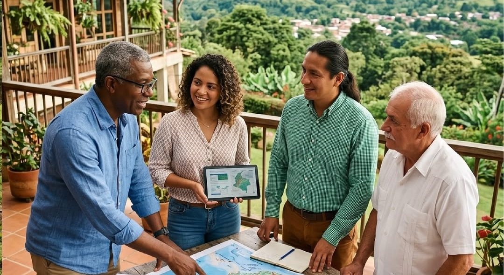
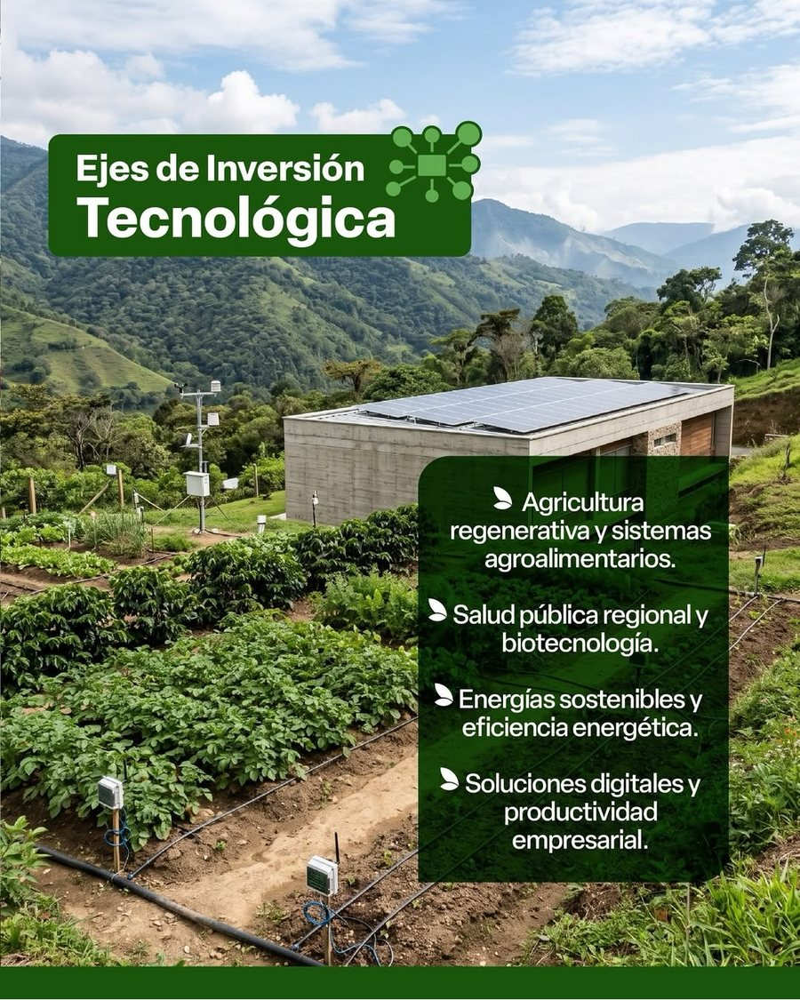
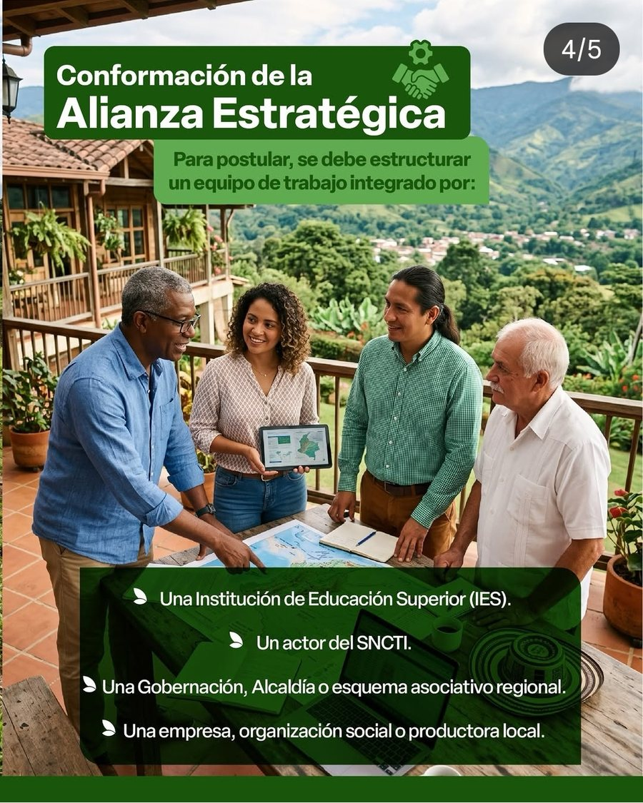
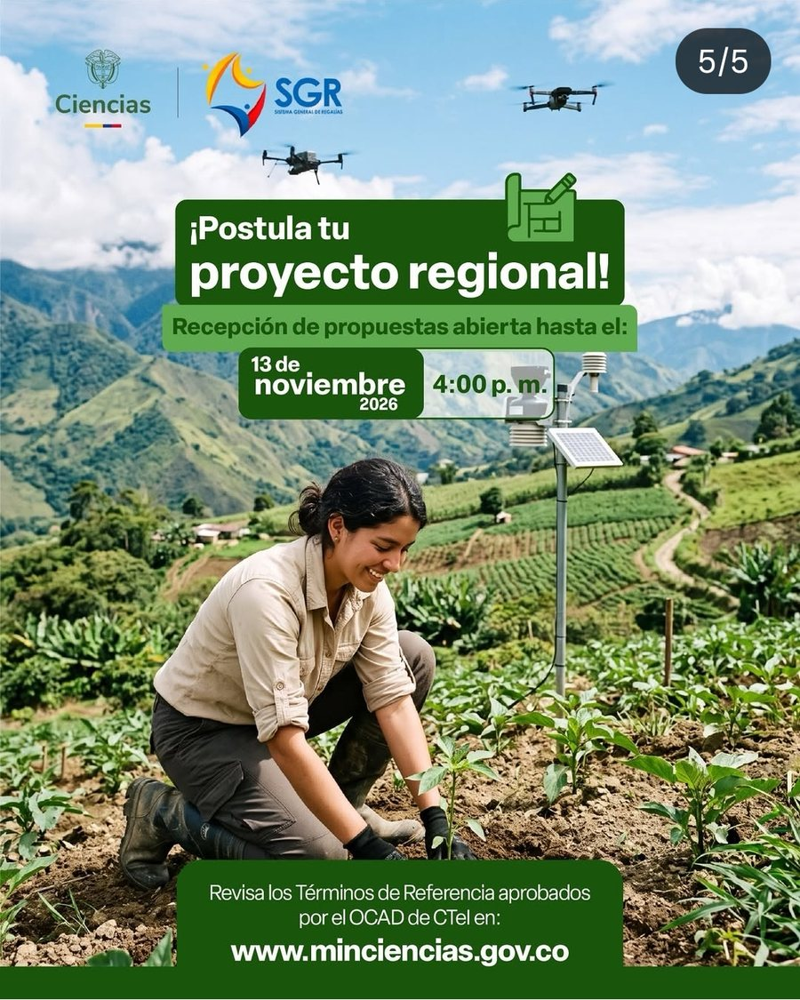

MinCiencias abrió las convocatorias 54 y 55 del Sistema General de Regalías. Aquí le hacemos seguimiento día a día: quién puede postular, cuánta plata hay, qué se le viene al Bajo Cauca y cómo exigir información.
Colombia's Science Ministry opened calls 54 and 55 of the General Royalties System. We track them day by day: who can apply, how much money there is, what it means for Bajo Cauca and how to demand information.
Dos convocatorias con recursos de la Asignación para Ciencia, Tecnología e Innovación del Sistema General de Regalías (SGR). La 54 es para proyectos regionales; la 55, para macroproyectos que toquen varias regiones.
Two calls funded by the Science, Technology and Innovation allocation of the General Royalties System (SGR). Call 54 funds regional projects; call 55 funds macro-projects spanning several regions.
El punto que titila es donde vamos hoy (hora de Colombia). Las fechas marcadas "oficial" salen de la página de MinCiencias; las demás, de la prensa que citó los términos de referencia.
The pulsing dot marks where we are today (Colombia time). Dates marked "official" come from MinCiencias' page; the rest from press reports citing the terms of reference.
Cada proyecto debe responder a una demanda territorial priorizada (Anexo 4) en cada departamento donde se ejecute.
Every project must answer a prioritized territorial demand (Annex 4) in each department where it runs.
Solo personas jurídicas (empresas, entidades, organizaciones). Las personas naturales no pueden postularse. La entidad que lidera debe ser actor reconocido del SNCTI o acreditar trayectoria en CTeI.
Only legal entities (companies, institutions, organizations). Individuals cannot apply. The lead entity must be a recognized SNCTI actor or prove a track record in science and innovation.
Institución de Educación Superior según la Ley 30 de 1992.
Higher-education institution under Law 30 of 1992.
Otra universidad o una entidad con reconocimiento vigente de MinCiencias (centro de investigación, de desarrollo tecnológico, etc.).
Another university or an entity recognized by MinCiencias (research or tech-development center, etc.).
Gobernación, alcaldía o esquema asociativo de un departamento de la región del proyecto.
A department, municipality or territorial association in the project's region.
Empresa, gremio, cámara de comercio, productores, organización social, étnica o comunitaria, con representación legal.
A company, trade group, chamber of commerce, producers, social, ethnic or community organization with legal representation.

Ideas de proyecto que encajan con las líneas y con lo que vive el Bajo Cauca, y los papeles que puede jugar cada quien. Son posibilidades: cada idea tiene que cruzarse con las demandas territoriales del Anexo 4 antes de formularse.
Project ideas that fit the themes and Bajo Cauca's reality, and the roles each person or group can play. They are possibilities: each must match Annex 4's territorial demands before being drafted.
El 23 de julio de 2026 el OCAD actualizó el Plan Bienal 2025-2026 e incluyó estas dos convocatorias especiales. Según El Espectador, la 54 permitiría recuperar por vía rápida proyectos del bienio 2023-2024 de las convocatorias 38 a 43, y la 55 busca salvar la convocatoria 37. La Federación Nacional de CTeI (FEDECTI) lo celebró, pero pidió también salvar la convocatoria 33 del programa Ondas.
On July 23, 2026 the OCAD updated the 2025-2026 plan and added these two special calls. According to El Espectador, call 54 would fast-track projects from 2023-2024 calls 38 to 43, and call 55 aims to rescue call 37. The national science federation (FEDECTI) welcomed it but also asked to rescue call 33 (Ondas program).
En agosto, la Procuraduría pidió al OCAD aplazar la aprobación de tres convocatorias (44, 45 y 50) por cerca de $900.000 millones. Portafolio reportó que más de $1 billón en proyectos estuvo en riesgo por convocatorias que acumularon más de 50 cambios de cronograma. Por eso conviene vigilar que las fechas de esta ronda se cumplan y que los resultados se publiquen.
In August, the Inspector General's office asked the OCAD to postpone approving three calls (44, 45 and 50) worth about COP 900 billion. Portafolio reported over COP 1 trillion in projects were at risk after calls piled up more than 50 schedule changes. That's why it's worth watching that this round's dates hold and results are published.
Un robot revisa los medios cada 30 minutos y, al abrir la app, se hace además una búsqueda en vivo.
A robot checks the media every 30 minutes, and a live search runs each time you open the app.
Pregunte qué proyectos se presentan con plata de regalías para su territorio, quién los firma y cómo puede participar la gente. Artículo 23 de la Constitución y Ley 1755 de 2015: deben responder en máximo 15 días hábiles (10 si es solo información).
Ask which royalty-funded projects are being submitted for your territory, who signs them and how people can take part. Under Colombian law (Const. art. 23, Law 1755/2015) authorities must answer within 15 business days (10 for information requests). The letter is in Spanish, as required.



Piezas publicadas por @minciencias_co en Instagram.